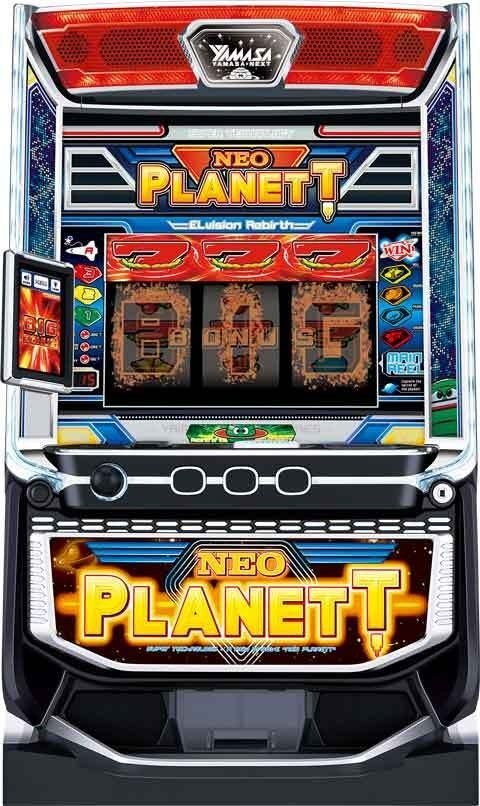
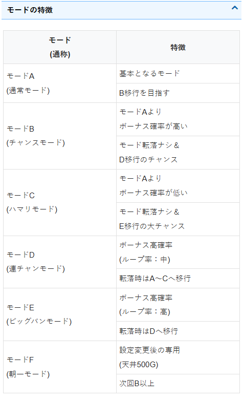
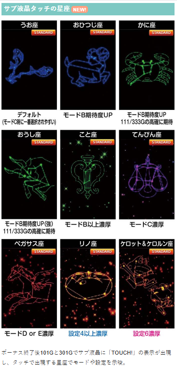
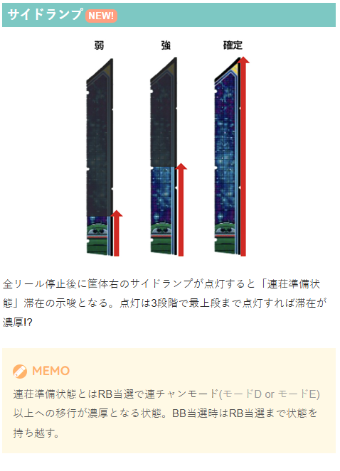
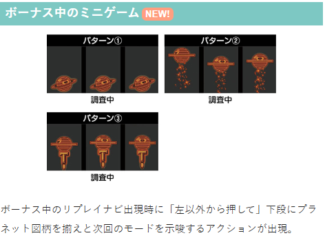
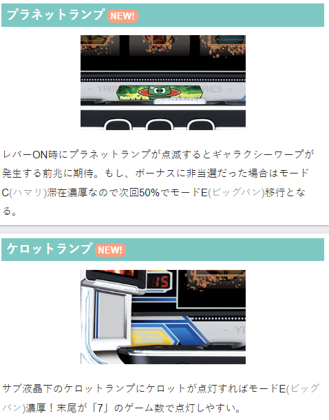
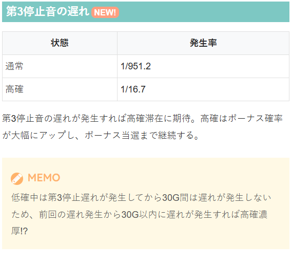

ネオプラネット

【天井情報】
通常時を777G＋α消化でボーナスに当選。
設定変更時は天井が500Gに短縮。
設定変更後は専用のモードFからスタートし、天井が500Gに短縮。また、次回モードがB以上となる。
【リセット判別】
不明
【有利区間について】
不明
狙い目
【リセット狙い】
190Gから
※朝2モードD,Eを否定した場合はモードB以上濃厚だが弱そう。朝2以降はゲーム数天井狙いの項目を参照。
【ゲーム数天井狙い】
530Gから
前回700G以上ハマり後（攻めた狙い目） 320G or 400Gから
5スルー以上 490Gから
※140G以内で当選しなかった場合はスルーとする。
※モードCが最もハマりやすいため、大きくハマる＝モードCの可能性アップかも？
【ゾーン狙い】
111Gゾーン 111Gを踏んでから20-30Gくらい高確示唆確認
333Gゾーン 325Gから 333Gを跨いで20-30Gくらい高確示唆確認
※333Gの高確移行抽選を狙う感じ。
※高確はボーナス当選まで継続し、高確中は第3停止音の遅れが頻発する。
※第3停止音の遅れ発生率 非高確1/951.2 高確1/16.7
※高確を判断する材料が現状遅れ以外ない。
【示唆関連の押し引きについて】
モードC以上濃厚 モードD or E 移行まで？
連荘準備状態濃厚 モードD or E 移行まで？
高確滞在濃厚 ボーナス当選まで（高確はボーナス当選まで継続）
サブ液晶タッチの星座
てんびん座 モードC以上濃厚
ペガサス座 モードD or E 濃厚
ボーナス中のミニゲーム
パターン③が強そうだが現状何を示唆しているか不明。モード示唆？
サイドランプ
最上段まで点灯したら連荘準備状態濃厚？
その他
プラネットランプ 点滅してボーナス非当選はモードC滞在濃厚
ケロットランプ 点灯すればモードE濃厚
ホワイトホール 次回モードE濃厚
第3停止音の遅れ 前回の遅れから30G以内に遅れが発生すれば高確濃厚？
【有利区間関連狙い】
不明
やめ時
天国が続いていた場合は130-140Gくらいまで回してやめ。
前回非天国だった場合も現状は130-140Gくらい回してやめ？
ボーナス後101G目にサブ液晶タッチして示唆演出は確認。
その他






参考元
基本情報
- メーカー: セブンリーグ
- 機械割: 97.7% 〜 114.2%
- 導入開始日: 2025年11月17日（月）
- ゲーム性概要: ●レア役（リーチ目役含む）、毎ゲームの抽選でボーナスを抽選 ●通常時は滞在モードと内部状態によってボーナス当選率が変化 ●ボーナスはスーパーBIG（平均616枚）、BIG（平均367枚）、REG（平均95枚）の3種類 ●ボーナス中はBIGの1G連抽選あり ●スタンダードモードと初代モードの2種類の演出モードを選択できる


打ち方
打ち方・小役
打ち方（小役狙い）
［最初に狙う絵柄］ 左リール上段付近に⑨の赤7（下にチェリー）を目押し。チェリーもこぼしがない（左リールチェリー非停止でも1枚獲得）ので、左リールはフリー打ちでもいいのだが、チェリーとオレンジ成立がわかりやすい⑨の赤7狙いをオススメだ。
［オレンジ停止時］ 中リールはBARか青7を狙えばオレンジをフォローできる。
［チェリーの停止パターン］
変則押しはNG
ナビ非発生時は左1stでの消化を推奨だ。
リーチ目／出目法則
リーチ目例（リーチ目役）
リーチ目役はすべてBIG以上濃厚となる。
解析情報通常時
小役関連
小役確率
| 役 | 確率 |
|---|---|
| リプレイ | 1/7.3 |
| ベル | 1/15.2 |
| オレンジ | 1/128.0 |
| 角チェリー | 1/97.5 |
| 中段チェリー | 1/390.1 |
| リーチ目役（合算） | 1/910.2 |
小役確率は全設定共通だ。
リーチ目役確率詳細
| 役 | 確率 |
|---|---|
| フラグA | 1/1170.3 |
| フラグB | 1/16384.0 |
| フラグC | 1/16384.0 |
| フラグD | 1/16384.0 |
| フラグE | 1/16384.0 |
リーチ目役の出目法則
| リーチ目役 | 出目法則 |
|---|---|
| フラグA | 中段チェリーが出やすい |
| フラグB | 角チェリーが出やすい |
| フラグC | オレンジハズレが出やすい |
| フラグD | ハズレ目逆転系 |
| フラグE | リーチ目15枚役 |
リーチ目役は5種類で、すべてBIG濃厚。それぞれ成立時の停止出目法則が変化する。
中段チェリー時の抽選値
中段チェリーは高確移行・ボーナス当選に期待できるレア役。左リール中段にチェリーが停止した時点では通常の中段チェリーとリーチ目役（フラグA）の可能性がある（ボーナスが対角に停止でリーチ目）。
中段チェリー性能
| 確率 | 1/292.57（リーチ目含む） ※中段チェリーフラグ単体だと1/390.1 |
|---|---|
| リーチ目期待度 | 約25% （左リール中段にチェリー停止した時点での期待度） |
| 備考 | リーチ目でなかった場合でも高確移行や ボーナスを抽選 |
［中段チェリー］モードごとの高確orボーナス当選率
| 滞在モード | 低確中の高確移行orボーナス | 高確中のボーナス |
|---|---|---|
| モードA | 38.8% | 57.5% |
| モードB | 48.9% | 57.2% |
| モードC | 29.5% | 52.0% |
| モードD | 80.0% | 81.3% |
| モードE | 81.1% | 81.3% |
| モードF | 54.2% | 59.7% |
内部状態関連
高確概要
［ボーナス当選率が1/31.2以上に！］ 高確は滞在モードを参照して、レア役やゲーム数消化契機で移行。 移行すればボーナス当選まで継続 して、滞在中はモードに応じてボーナス期待度が大幅にアップする。一般的な高確とは異なり、実質的に高確当選＝ボーナス濃厚になるところがポイントだ。
高確 性能
| 移行契機 | レア役時の抽選、77・111・333G到達時の抽選 ※抽選値はモード依存 |
|---|---|
| 継続ゲーム数 | ボーナス当選まで |
| 滞在中のポイント | ボーナス当選率が大幅にアップ ※抽選値はモード依存 |
| 備考① | 滞在中は第3停止時の停止音遅れの頻度がアップ |
| 備考② | 毎ゲーム高確移行を抽選 （モードD・E中は優遇） |
高確中のボーナス当選率
| 滞在モード | 当選率 |
|---|---|
| モードA | 1/31.2 |
| モードB | 1/31.2 |
| モードC | 1/31.2 |
| モードD | 1/9.9 |
| モードE | 1/4.8 |
| モードF | 1/31.2 |
［第3停止時の停止音遅れに注目］ 低確中も第3停止時の停止音遅れは発生するが 「低確中は第3停止時の停止音遅れが発生したゲームから30G間は発生しない」 という特徴がある。つまり、30G以内に第3停止時の停止音遅れが2回以上発生すれば高確中濃厚となるわけだ。
連チャン準備状態
［連チャン準備状態の解説］ 連チャン準備状態はモードとは別軸で抽選される特殊な状態で、 滞在時にREGに当選すると必ずモードDorE（連チャンorビッグバンモード） へ移行 。
全リール停止時の筐体右サイドランプの点灯パターンで滞在が示唆される。
連チャン準備状態 性能
| 移行契機 | REG当選時の抽選、有利区間移行時の抽選 |
|---|---|
| 終了条件 | REG当選、有利区間終了時 |
| 恩恵 | 必ずモードD以上へ移行 |
連チャン準備状態はREGで終了するが、そのREG当選時の抽選で再度突入することもある。
連チャン準備状態中・REG当選時の移行モード
| 滞在モード（REG当選時に決まったモード） | 移行先 |
|---|---|
| モードA | モードD or モードE |
| モードB | モードD or モードE |
| モードC | モードE |
| モードD | モードD or E |
| モードE | モードE |
連チャン準備状態中の抽選を正確に説明すると、まずボーナス当選時に「①通常通りのモード移行」を抽選。REG当選時は前述の「通常通りのモード移行」で決まったモードを参照して、「②連チャン準備状態専用のモード移行」を抽選する。 たとえば、連チャン準備状態かつモードA中にREGを引いた場合、①の抽選でモードCに移行していれば、モードEに移行するわけだ。
強パターンなら連チャン準備状態濃厚だ。
［レア役］高確当選率
| 滞在モード | 角チェリー・オレンジ | 中段チェリー |
|---|---|---|
| モードA | 4.0% | 14.6% |
| モードB | 4.0% | 14.6% |
| モードC | 1.1% | 3.7% |
| モードD | 30.1% | 62.5% |
| モードE | 30.1% | 62.5% |
| モードF | 5.2% | 19.0% |
レア役での高確移行率は全設定共通だ。
［モードA～E/毎ゲーム抽選］1Gごとの高確当選確率
| 滞在モード | 確率 |
|---|---|
| モードA～C | 1/10306.4 |
| モードD | 1/168.0 |
| モードE | 1/26.3 |
［モードF/毎ゲーム抽選］1Gごとの高確当選確率
| 設定 | 確率 |
|---|---|
| 1 | 1/1260.3 |
| 2 | 1/1008.2 |
| 4 | 1/840.2 |
| 5 | 1/336.1 |
| 6 | 1/219.2 |
毎ゲーム抽選（レア役成立以外の全役）は滞在モードを参照して抽選。モードF滞在中は高設定ほど高確へ移行しやすい。
［規定ゲーム数消化］高確当選のポイント
| 規定ゲーム数 | ポイント |
|---|---|
| 77G | モードD・E滞在時は高確当選濃厚 |
| 111G | モードB滞在時に高確当選の可能性あり |
| 333G | モードB滞在時に高確当選の可能性あり |
| 444G | モードF滞在時は高確当選濃厚 |
規定ゲーム数での高確移行も滞在モードを参照して抽選。 モードFのみ444Gで必ず高確へ移行する。設定変更時の天井は500Gだが、この抽選があるため、天井到達より早めにボーナスが当たる可能性が高い。
星座ごとの示唆はコチラ
第3停止時の停止音遅れ確率
| 滞在状態 | 確率 |
|---|---|
| 低確 | 1/951.2 |
| 高確 | 1/16.7 |
低確中は上記の確率で停止音遅れが発生するが、発生したゲームから30G間は発生しないという特徴がある。 ちなみに理論上、高確30G以内に停止音遅れが発生する割合は約84%と高いため、停止音遅れさえチェックしておけば比較的高確かどうかはわかりやすい。
モード
モード概要
［6種類のモードでボーナス確率を管理］ モードは有利区間移行時（設定変更時）・ボーナス当選時に抽選。種類はA〜Fの6種類があり、滞在モードによってボーナス確率やボーナス比率、天井ゲーム数が変化する。
モードごとの特徴
| モード | 特徴 |
|---|---|
| モードA | ● まずはモードBを目指したい基本のモード |
| モードB | ● モードAよりもボーナス確率が高い ● モードAへの転落なし＆ モードD移行のチャンス |
| モードC | ● モードAよりもボーナス確率が低い ● モード転落なし＆ モードE移行の大チャンス |
| モードD | ● ボーナス高確率状態（ループ率：中） ● モード転落時はモードA〜Cへ移行 |
| モードE | ● ボーナス高確率状態（ループ率：高） ● モード転落時は モードDへ移行 |
| モードF | ● 設定変更（リセット）後に移行 ● ボーナス後は必ずモードB以上へ移行 |
モードD・Eは毎ゲームの高確移行抽選が優遇されているため、9割以上が100G以内にボーナスに当選する。
モードが影響する抽選まとめ
レア役契機のボーナス当選率
成立役不問の毎ゲームボーナス抽選
レア役時の高確移行抽選
天井ゲーム数
モードごとの天井ゲーム数
| モード | 天井 |
|---|---|
| モードA～E | 777G |
| モードF | 500G |
基本的にモードDorEに移行するまでモード転落はない。モードEはBIG比率がアップするところもポイントだ（50%以上）。
4号機（ネオプラネットXX）時代の対応モード
| 今回のモード | 4号機時代のモード名 |
|---|---|
| モードA | 通常モード |
| モードB | チャンスモード |
| モードC | ハマリモード |
| モードD | 連荘モード |
| モードE | ビッグバンモード |
| モードF | 朝一モード |
4号機のネオプラが好きだったプレイヤーは、上記のモード名で把握しておくとわかりやすいだろう。
モードごとのボーナス出現確率（設定1）
| 滞在モード | 確率 |
|---|---|
| モードA | 1/371.8 |
| モードB | 1/283.5 |
| モードC | 1/462.0 |
| モードD | 1/57.6 |
| モードE | 1/30.3 |
| モードF | 1/218.1 |
高確移行を加味した、各モードごとのボーナス当選確率だ。
高確中のボーナス当選率
高確中もモードによってボーナス当選率が変化する。
解析情報ボーナス時
ボーナス
ボーナス概要
すべて擬似ボーナス（AT）で、種類はスーパーBIG・BIG・REGの3種類。 ボーナス当選を契機にモードが抽選され、消化中は1G連を抽選（リーチ目は1G連濃厚）する。
ボーナス概要
| 当選契機 | 成立役に応じた抽選、毎ゲームの抽選、 規定ゲーム数消化 |
|---|---|
| 獲得枚数 | スーパーBIG：平均616枚、BIG：平均367枚、 REG：平均95枚 |
| 純増 | 約8.8枚/G |
| 消化中の抽選 | 1枚役やレア役でBIG1G連抽選 （リーチ目役は1G連濃厚） |
| 備考 | ボーナス当選時は滞在モードを参照して 移行するモードを抽選 |
リーチ目役契機はBIG濃厚、リーチ目役以外で当選したボーナス比率はBIG：REG＝ほぼ1：1。
ボーナス中の確率
| 1枚役確率 | 1/39.3（逆押しナビ発生） |
|---|---|
| 1G連確率 | 1/398.9（毎ゲームのトータル） |
1G連の当選率は全ボーナス共通。レア役確率は通常時と共通だ。
［スーパーBIG］ スーパーBIGはボーナス終了後100G内にボーナスを引いた時に抽選。 終了後は連チャン期待度の高いモードD以上濃厚＋ボーナス当選でBIG濃厚だ。
［BIG］
［REG］
［レア役時の1G連抽選］ レア役時は前兆を経て1G連の当落を告知。
演出に成功すれば1G連だ。
ボーナス中のミニゲーム
ボーナス中のリプレイナビ発生時は逆押しして下段にプラネットを揃えるとビジョンにプラネットが登場して次回モードを示唆。 枚数的に損をする要素ではないので積極的にチャレンジしよう。
ボーナス中・リプレイ成立時のモード示唆
| タイミング | リプレイ成立時（小役ナビのリプレイ時） |
|---|---|
| 手順 | 逆押しで下段にプラネットを揃える |
| 成功時の示唆 | プラネットのパターンで次回のモードを示唆 |
［リプレイナビ］ 逆押しで下段にプラネットを目押し。 右＆中リールは青7目安、左リールは赤7目安で狙うと目押ししやすい。
滞在モードごとの割合
| 滞在モード | プラネットのみ | プラネット上昇 | Tロケットで上昇 |
|---|---|---|---|
| モードA | 70.0% | 28.4% | 1.6% |
| モードB | 65.1% | 31.1% | 3.9% |
| モードC | 70.0% | 28.4% | 1.6% |
| モードD | 50.0% | 40.6% | 9.4% |
| モードE | 45.0% | 42.5% | 12.5% |
［プラネットのみ］
［プラネット上昇］
［Tロケットで上昇］
1G連当選率
| 役 | 当選率 |
|---|---|
| 1枚役（逆押しナビ） | 0.8% |
| オレンジ | 6.3% |
| 角チェリー | 2.0% |
| 中段チェリー | 20.3% |
| リーチ目役 | 100% |
全ボーナス共通で、同じ抽選値で1G連を抽選。1G連当選後も同じ抽選値で1G連をストックする。
演出情報
通常時
STANDARDモードの演出法則
［スターダスト演出］ 第1停止〜第3停止まで、続くほど期待度がアップする。
スターダスト演出
| 対応役 | 第1停止 | ハズレorリプレイorチェリー |
|---|---|---|
| 対応役 | 第2停止 | ハズレor共通ベルorオレンジ |
| 対応役 | 第3停止 | ハズレorオレンジ |
| 落下パターン | ストレート＜ジグザグ＜サイドスルー | |
| ハズレ成立時 | 第2停止・第3停止時のハズレは前兆示唆 | |
| 対応役矛盾 | 本前兆濃厚 |
サイドスルーは左から右に移動するチャンスアップパターンだ。
［ターゲットセブン演出］ 7が一直線に揃えばBIG以上濃厚だ。
ターゲットセブン演出
| 発生した時点 | 前兆示唆 |
|---|---|
| 7の数 | ハズレでも7が多いほどチャンス |
| 成立役 | リプレイが揃えば 本前兆濃厚 |
［小役ナビ演出］
成立役をナビする演出で、対応役を否定すればボーナス濃厚。対応役はリール下部に表示され、右側の小役ならチャンスだ。
小役ナビ演出
| ダブルナビ | 右側の小役が止まればチャンス |
|---|---|
| プラネットナビ | 全役対応 |
| 対応役矛盾 | ボーナス濃厚 |
［7ルーレット演出］ 真ん中のアイコンパターンで期待度変化。成功すればBIG以上濃厚、イカルーレットは成功濃厚だ。
7ルーレット演出
| ルーレットの位置 | ルーレットが7図柄の上で開始すれば成功濃厚 |
|---|---|
| ルーレットパターン | スピンスター＜ミスティクラウド＜ エレキショック＜エレキクラウド |
| プレミアムパターン | イカルーレット or スイカロボ出現 |
もちろんイカをはじめとするおなじみの山佐キャラはどこで出現してもプレミアム！
［シャッフルプラネット演出］ ビッグプラネットが完成すればボーナス。プラネットが揃ったままの全回転パターンもある。
シャッフルプラネット演出
| 回転方向 | 逆回転ならチャンスアップ |
|---|---|
| お助けUFO出現 | チャンスアップ |
| ルーレットパターン | センタースクロール＜バイブレーション＜ ストロボシャッフル |
| プレミアムパターン | カエルルーレット or プラネットフルカラー |
センタースクロールが通常パターン。バイブレーションはブルブルしながら進行、ストロボシャッフルはストロボで撮影したようにカットが進行していく。
プレミアムパターンはどちらもBIG濃厚！
パターン別期待度
| 演出 | 期待度 | |
|---|---|---|
| センター スクロール | 順回転 | 13.0% |
| センター スクロール | 順回転＋UFO | 72.6% |
| センター スクロール | 逆回転 | 19.8% |
| センター スクロール | 逆回転＋UFO | 84.1% |
| バイブ レーション | 順回転 | 24.4% |
| バイブ レーション | 順回転＋UFO | 100% |
| バイブ レーション | 逆回転＋順始動 | 100% |
| バイブ レーション | 逆回転 | 49.1% |
| バイブ レーション | 逆回転＋UFO | 100% |
| ストロボ シャッフル | 順回転 | 81.6% |
| ストロボ シャッフル | 順回転＋UFO | 100% |
| 全回転 | 100% | |
| カエルルーレット | 100% | |
| プラネットフルカラー | 100% |
※順回転…順番にリールが動くパターン ※フルカラープラネットとカエルルーレットはセンタースクロールでのみ発生
［シャッター演出］ 上パネルの左右にあるシャッターが開く演出で、左側は小役示唆、右側ではカウントダウンが発生する。
シャッター演出
| 左シャッターの 対応役 | UFO | ハズレorリプレイor共通ベル |
|---|---|---|
| 左シャッターの 対応役 | Tロケット | オレンジorチェリー |
| 左シャッターの 対応役 | プラネット | ハズレ以外の全役 |
| 左シャッターの 対応役 | 星 | 本前兆濃厚 （成立役不問） |
| 左シャッターの 対応役 | ナイツ | BIG濃厚 （ナイツの月） |
| 右シャッターの カウントダウン | カウントが0まで行けば ボーナス濃厚 ※0非到達でもボーナスの可能性あり |
［シューティングスター演出］ 小役対応演出で、流星の数が多いほどチャンス。ハズレ時に発生すると前兆濃厚だ。
シューティングスター演出
| 対応役 | 小役対応、ハズレ時は前兆濃厚 |
|---|---|
| 流星の数 | 1個＜3個＜大量 |
［UFO演出］ リール上に表示されるパターンで対応役を示唆する。
UFO演出
| 対応役 | 消える | ハズレ |
|---|---|---|
| 対応役 | 右に通過 | ハズレかつ前兆濃厚 |
| 対応役 | 星 | リプレイ |
| 対応役 | 月星 | 共通ベル |
| 対応役 | メテオ | オレンジ |
| 対応役 | 惑星 | チェリー |
| UFOの通過方向 | 右から登場して レア役を否定すればチャンス |
［消灯演出］ 消灯数によって成立役を示唆する。
消灯演出
| 対応役 | 1消灯 | リプレイor共通ベルorチェリー |
|---|---|---|
| 対応役 | 2消灯 | 共通ベルorオレンジorチェリー |
| 対応役 | 3消灯 | ロケット演出発展、非発展で 本前兆濃厚 |
| 1消灯でのハズレ | 前兆濃厚 | |
| 変則消灯 | 本前兆濃厚 |
［ロケット演出］ 3消灯から発展するジャッジ演出。
ロケット演出
| 配置パターン | ☆-BONUS-☆-BONUSならチャンス |
|---|---|
| 配置パターン | すべてBONUSなら BIG以上濃厚 |
［スペースクラウド演出］ 発生した時点でチェリーorボーナス。
［プラネットアタック演出］ 最終的に停止したもので期待度を示唆する。
プラネットアタック演出
| 期待度示唆 | 星 | BIG本前兆濃厚 |
|---|---|---|
| 期待度示唆 | CHANCE | チャンス |
| 期待度示唆 | 激熱 | 大チャンス |
| 期待度示唆 | BONUS | ボーナス濃厚 |
［レバーフラッシュ演出］ レバーON時に筐体の枠全体が白くフラッシュするチャンスアクション。
レバーフラッシュ演出
| 対応役 | ハズレorリプレイor共通ベルor中段チェリー |
|---|---|
| リプレイ成立時 | チャンス |
| ハズレ成立時 | 大チャンス |
※全演出共通で対応役系は否定でボーナス濃厚
初代モードの演出法則
［スターダスト演出］ 初代と同じく選択した演出頻度で法則が変化する。
スターダスト演出（演出頻度別） LOW or MIDDLE選択時の対応役
| 第2停止 | ストレート＋アクションなし | 共通ベルorオレンジ |
|---|---|---|
| 第2停止 | ジグザグ＋アクションなし | 共通ベルorオレンジ |
| 第3停止 | ストレート | チェリー |
| 第3停止 | ジグザグ | オレンジ |
HIGH選択時の対応役
| 第2停止 | ストレート＋アクションなし | リプレイor共通ベルor オレンジ |
|---|---|---|
| 第2停止 | ジグザグ＋アクションなし | リプレイor共通ベルor オレンジ |
| 第3停止 | ストレート | チェリー |
| 第3停止 | ジグザグ | オレンジ |
演出頻度共通
※アクション…落下後の変化のアリナシ ※サイドスルー…左から右に通過するパターン
［ターゲットセブン演出］ LOW選択時はリプレイ成立でBIG濃厚だ。
ターゲットセブン演出
| 発生した時点 | 前兆示唆 |
|---|---|
| 7の数 | ハズレでも7が多いほどチャンス |
| 成立役 | リプレイが揃えば BIG濃厚 |
［小役ナビ演出］
小役ナビ演出
［7ルーレット演出］
7ルーレット演出
山佐キャラはどこで出現してもプレミアム！
［シャッフルプラネット演出］ ビッグプラネットが完成すればボーナス。プラネットが揃ったままの全回転パターンもある。
シャッフルプラネット演出
| 成立役 | ハズレ（小役否定） |
|---|---|
| 回転方向 | 逆回転ならチャンスアップ |
| お助けUFO出現 | チャンスアップ |
| ルーレットパターン | センタースクロール＜バイブレーション＜ ストロボシャッフル |
| プレミアムパターン | カエルルーレット |
センタースクロールが通常パターン。バイブレーションはブルブルしながら進行、ストロボシャッフルはストロボで撮影したようにカットが進行していく。
プレミアムパターンはBIG濃厚！
パターン別期待度
| 演出 | LOW | MIDDLE | HIGH | |
|---|---|---|---|---|
| センター スクロール | 順回転 | 25.3% | 1.2% | 0.3% |
| センター スクロール | 順回転＋UFO | 100% | 22.3% | 21.3% |
| センター スクロール | 逆回転 | 100% | 4.8% | 2.3% |
| センター スクロール | 逆回転＋UFO | 100% | 47.1% | 29.5% |
| バイブ レーション | 順回転 | 25.3% | 3.4% | 0.8% |
| バイブ レーション | 順回転＋UFO | 100% | 100% | 100% |
| バイブ レーション | 逆回転＋順始動 | 100% | 100% | 100% |
| バイブ レーション | 逆回転 | 100% | 41.9% | 7.8% |
| バイブ レーション | 逆回転＋UFO | 100% | 100% | 100% |
| ストロボ シャッフル | 順回転 | 100% | 65.6% | 10.1% |
| ストロボ シャッフル | 順回転＋UFO | 100% | 100% | 100% |
| 全回転 | 100% | 100% | 100% | |
| カエルルーレット | 100% | 100% | 100% | |
| プラネットフルカラー | 一 | 一 | 一 |
※順回転…順番にリールが動くパターン ※カエルルーレットはセンタースクロールでのみ発生
※全演出共通で対応役系は否定でボーナス濃厚
演出モード共通の演出法則
［サンドストーム演出］ 浮かび上がったパターンで成立役を示唆する高期待度演出だ。
サンドストーム演出
| プラネット | 小役以上 |
|---|---|
| BAR | ボーナス濃厚 |
| 7 | BIG以上濃厚 |
| プレミアムパターン | ドクターA7 |
ドクターA7はBIG濃厚だ。
［ブラックホール演出］ 発生した時点でボーナス濃厚！
［ギャラクシーワープ演出］ BIG以上濃厚！
［ホワイトホール演出］ BIG＋モードE（ビッグバンモード）濃厚の超プレミアム演出だ。
［サウンド系の演出］ サウンド系の演出パターンも多数存在する。
サウンド系演出の役割
| スーパーウエイト音 | チェリー対応 |
|---|---|
| 貯留警告音 | BIG以上濃厚 |
| ノッカー音告知 | BIG以上濃厚 |
※全演出共通で対応役系は否定でボーナス濃厚
ランプ系演出
ランプ系演出＆部位説明
［ケロットランプ点灯］
ランプ系演出の詳細
| ネオプランプ | 点灯すればリーチ目役成立のチャンス ※STANDARDモード中のみ発生 |
|---|---|
| プラネットランプ | レバーON時に点滅すると ギャラクシーワープが発生する前兆かも!? |
| プラネットランプ | フェイクだった場合はモードC濃厚 |
| ケロットランプ | 点灯すればモードE濃厚 |
| ケロットランプ | 末尾7のゲーム数で点灯しやすい |
プラネットランプ点滅時、結果的にボーナス非当選だった場合はモードC（ハマリモード）濃厚。 ケロットランプ点灯時はモードE（ビッグバンモード）濃厚だ。
ボーナス連チャン回数別・トップランプの色
| 初当り時 | 白 |
|---|---|
| 2連目 | 青 |
| ３～4連目 | 黄 |
| 5～9連目 | 緑 |
| 10連目以降 | 赤 |
| 1G連告知時 | 紫 |
ボーナス終了画面
ボーナス終了画面のモード示唆
ボーナス終了画面に登場するキャラでモードと設定が示唆される。
ボーナス終了画面の示唆
［衛星］
［宇宙飛行士］
［ウィンちゃん］
［大きいパン］ BIGなパン…というわけで、ビッグバンモード（モードE）濃厚だ。
［Tロケット通過］ ボーナス1G連濃厚！
［連チャンに応じた表示変化］
連チャン回数による表記
| 2～9連 | 継続中 |
|---|---|
| 10～14連 | 大継続中 |
| 15連～99連 | 猛継続中 |
| 100連～ | AMAZING! |
連チャン回数に応じて、終了画面に表示される文字が変化する。
サブ液晶タッチ
規定ゲーム数消化時の星座（モード＆設定示唆）
101G目と301G目ではサブ液晶に「TOUCH!」が表示。タッチすると星座で滞在モードや設定が示唆される。
星座ごとの示唆
| パターン | 示唆 |
|---|---|
| うお座 | デフォルト ※モードC時はうお座の選択率が一番高い |
| おひつじ座 | モードB示唆 |
| かに座 | モードB示唆、 111G・333Gでの高確移行に期待できる |
| おうし座 | モードB示唆［強］、 111G・333Gでの高確移行に期待できる |
| こと座 | モードB以上濃厚 |
| てんびん座 | モードC濃厚 |
| ペガサス座 | モードD or E濃厚 |
| リノ座 | 設定４以上濃厚 |
| ケロット＆ケロルン座 | 設定６濃厚 |
かに座・おうし座の法則
| 消化ゲーム数 | 法則 |
|---|---|
| 101G | かに座なら111Gか333Gに約33％で高確移行、 おうし座なら111Gか333Gに約50％で高確移行 |
| 301G | かに座なら333Gに約33％で高確移行、 おうし座なら333Gに約50％で高確移行 |
101Gと301Gの示唆は重要なので要チェックだ。
カスタム
演出モード＆ぷるぷる完全告知
サブ液晶から好きな演出モードを選択可能。4つのモード（STANDARD・初代3種類）とぷるぷる完全告知の組み合わせで、計8通りで遊ぶことができる。
演出モード
| 選択モード | 4号機時代のモード名 | |
|---|---|---|
| STANDARD モード | ● 初代ネオプラに新規演出を追加したモード ● 演出が頻発するとチャンス！ ● 初代とは違う演出法則が味わえる | |
| 初代 モード | LOW | ● 初代のLOWモードに近い雰囲気 ● 演出が発生しただけでチャンス！ |
| 初代 モード | MIDDLE | ● 初代のMIDDLEモードに近い雰囲気 ● 演出が頻発するとチャンス！ |
| 初代 モード | HIGH | ● 初代のHIGHモードに近い雰囲気 ● 演出頻度が落ちてくるとチャンス！ |
初代モードのLOWとMIDDLEは、オレンジこぼしの次ゲームはアツい演出が発生しやすいという特徴もある。
［ぷるぷる告知も楽しい！］ スーパープラネットDXのぷるぷるプラネットが実写で表示（リールの左側）。 光ればボーナス濃厚の完全告知カスタムだ。
ボーナス中
ボーナス中の演出法則
［ナビ演出］
ナビ演出
| 赤色の押し順ナビ | 前兆中濃厚かつ前兆継続 |
|---|---|
| ！ナビ | レア役濃厚 |
| !!!ナビ | レア役以上かつ大チャンス |
［小役ナビ演出］ 基本的に通常時と同じ。オレンジやチェリーナビは1G連に期待、リプレイナビ時は逆押しのモード示唆にチャレンジできる。
逆押しのモード示唆はコチラ
［シルエット演出］ 煽りが第3停止まで続けば、次ゲームから惑星直列演出に発展する。
［惑星SU演出］ 惑星の名称がステップアップしていく演出で、SU5まで発展すれば1G連濃厚になる。
惑星ステップアップ演出
| パターン | 1G連期待度 |
|---|---|
| STEP1（Mercury） | 100% |
| STEP2（Venus） | 81.4% |
| STEP3（Jupiter） | 83.1% |
| STEP4（Sun） | 94.5% |
| STEP５（プラネット） | 100% |
| トータル | 88.6% |
［惑星直列演出］ 成功すれば1G連濃厚、上画像のようにプラネットの目が燃えていればチャンスアップだ。
惑星直列演出
| パターン | 1G連期待度 |
|---|---|
| デフォルト（目が燃えていない） | 34.3% |
| 目が燃えている | 87.7% |
| トータル | 51.4% |
BGM変化
ボーナス中のBGM変化はモードDorE（連チャンorビッグバンモード）濃厚になる。
BGM変化
| もろびとアレンジ（BIG中） | 次回モードDorE濃厚 （ボーナス３連以上の一部で発生） |
|---|---|
| アマリリスアレンジ（REG中） | 次回モードDorE濃厚 （ボーナス３連以上の一部で発生） |